New York Cheesecake
La New York Cheesecake es una tarta de queso americana conocida a lo largo de todo el mundo. Con una base de galleta, un relleno cremoso de queso y coronada por mermelada y frutos rojos, es una auténtica delicia. A continuación, la receta paso a paso.
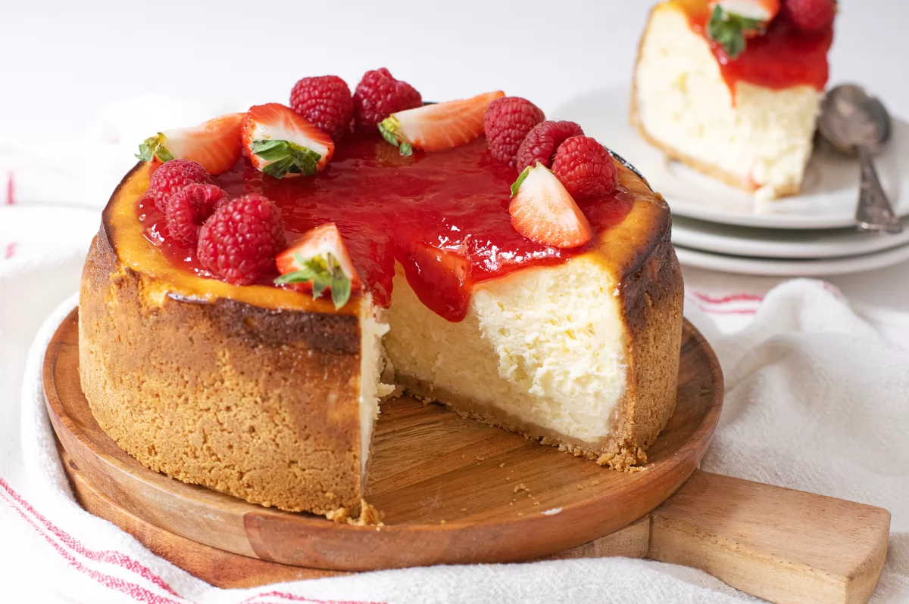reparar esta receta de la archiconocida tarta de queso americana es muy fácil. Si seguimos todos los pasos, os aseguro que va a quedar un interior muy cremoso que nadie se va a poder resistir a probarla. Si nos ceñimos a la receta original de la cheesecake, la acompañaremos con mermelada de fresa y frutos rojos. Sin embargo, ya sabéis que podéis jugar con vuestra imaginación y darle una vuelta a los sabores simplemente cambiando de mermelada cada vez que la preparéis. De cualquier manera, está deliciosa.
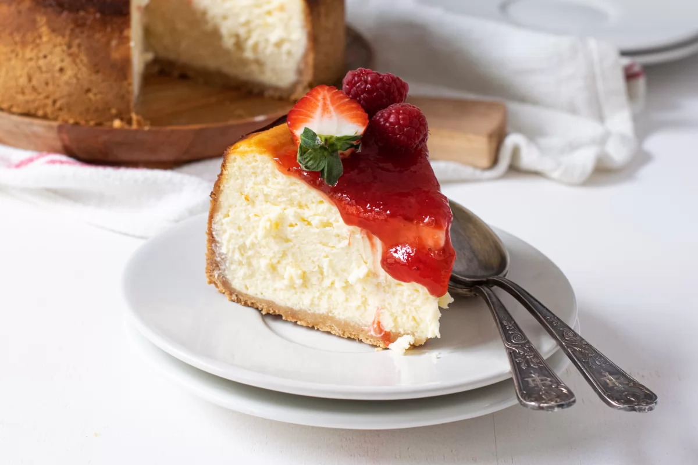Información de la receta
- Tiempo de preparación: 15 minutos.
- Tiempo de cocinado: 35 minutos.
- Raciones: 10.
- Categoría: postres.
- Tipo de cocina: americana.
- Calorías por ración (kcal) 552.
Ingredientes de la New York Cheesecake
- 120 g de galletas tipo digestive picadas.
- 50 g de nueces picadas
- 80 g de mantequilla sin sal fundida.
- 1 yogurt griego.
- 200 g de azúcar blanco.
- 3 huevos M.
- Zumo de medio limón.
- 30 g de harina de trigo
- Mermelada de fresa
- Frutos rojos al gusto
Utensilios necesarios
- Molde desmontable de 20 cm de diámetro
- Un par de bowls
- Espátula de silicona
- Batidora manual
- Papel de horno
Cómo hacer la New York Cheescake
Precalentamos el horno a 200 ºC con calor arriba y abajo. Engrasamos y forramos la base del molde y lo reservamos.
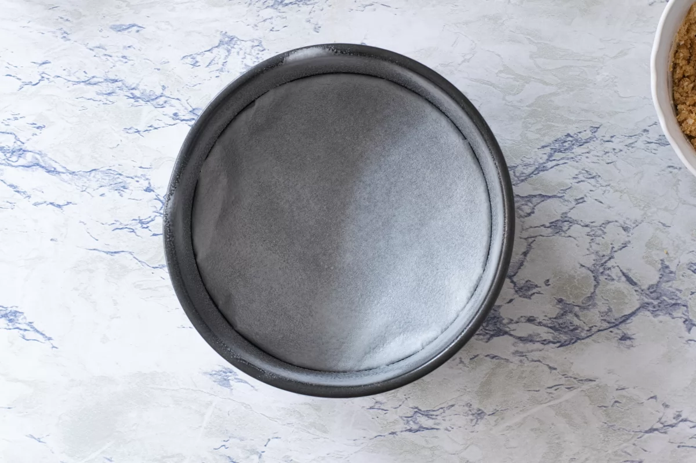Mezclamos muy bien los 120 gramos de galleta picada, los 50 gramos de nueces picadas y los 80 gramos de mantequilla sin sal fundida. Tenemos que obtener una textura que nos recuerde a la arena de la playa mojada.
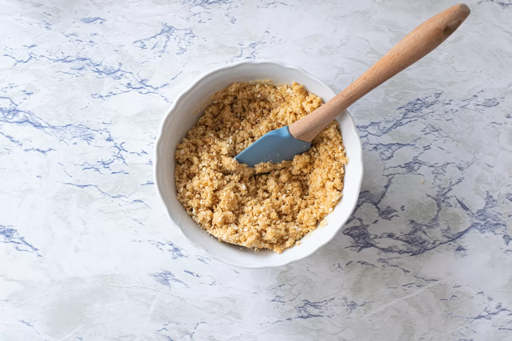Vertemos las galletas en el molde y con la ayuda de una espátula o una cuchara, las vamos acomodando por la base y subimos unos 3-4 cm por las paredes. Reservamos el molde en la nevera hasta el momento de poner el relleno.
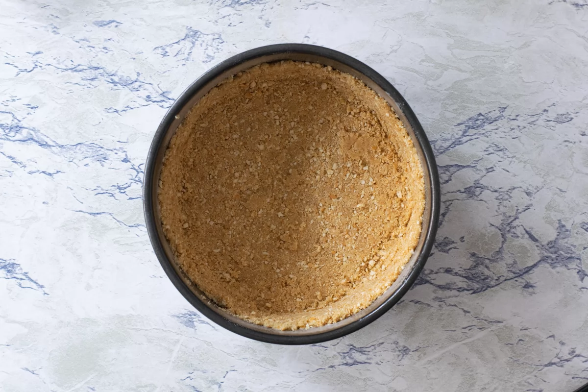Ponemos en un bol los 740 gramos de queso crema y el yogurt griego. Mezclamos hasta que ambos ingredientes queden integrados.
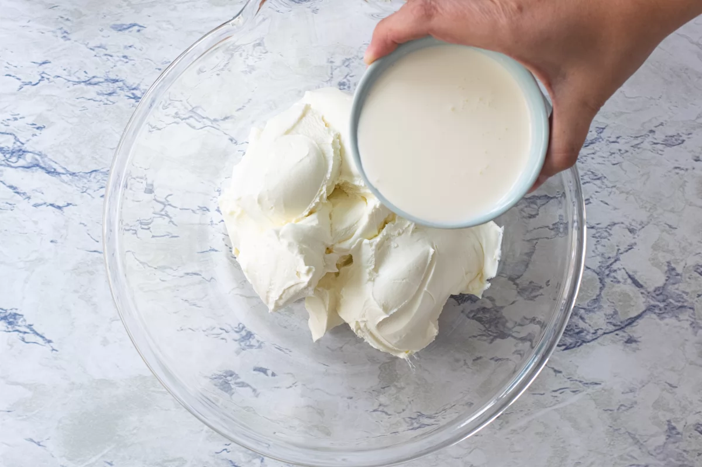Añadimos ahora 200 gramos de azúcar blanco y mezclamos muy bien.
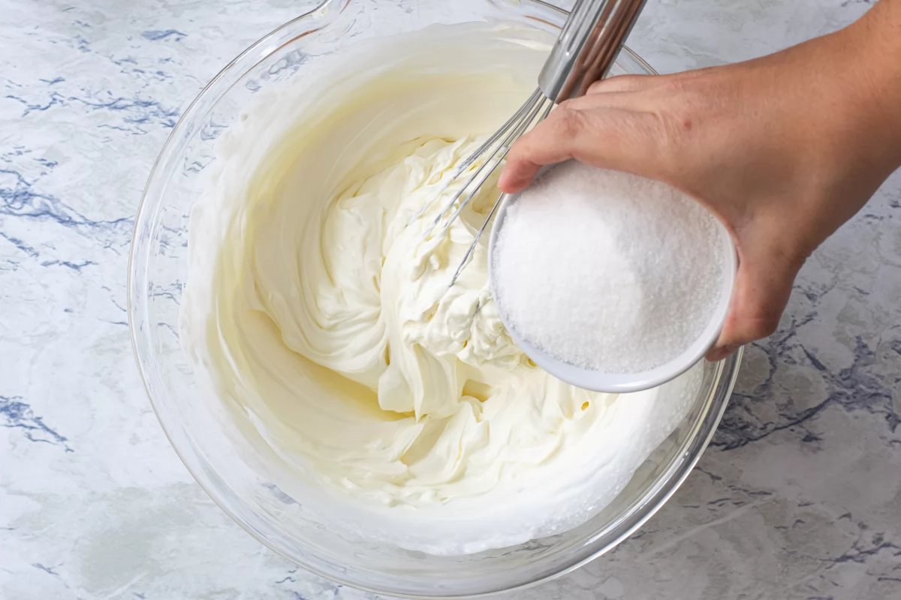Echamos los 3 huevos M y mezclamos hasta que se integren por completo.
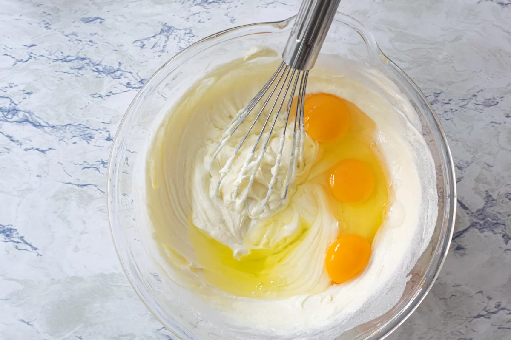Agregamos el zumo de medio limón y lo integramos en la mezcla.
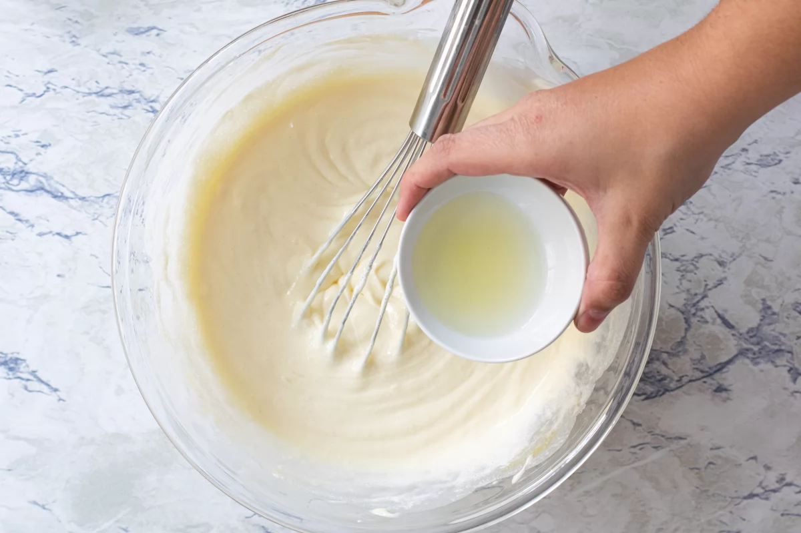Vertemos 30 gramos de harina de trigo y mezclamos hasta que se integre por completo en la mezcla.
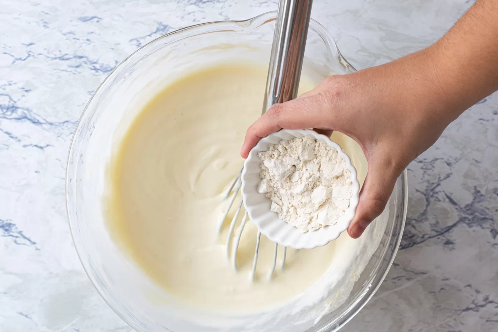Cuando nuestra crema de queso esté completamente homogénea, pasamos la masa al molde con galleta que teníamos reservado en la nevera. Llevamos al horno y horneamos durante 10 minutos a 200 ºC con calor arriba y abajo. A continuación, bajaremos el horno a 190 ºC manteniendo el calor arriba y abajo y hornearemos durante 20-25 minutos, hasta que veamos que los laterales de la tarta están cuajados y el centro todavía baila un poco. Pasado el tiempo de horneado, dejaremos que la tarta se enfríe por completo dentro del horno.
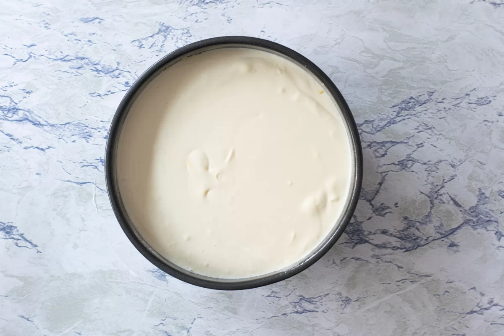Cuando la tarta se haya enfriado en el horno, la pasamos a la nevera y la dejamos unas 4 horas, hasta que se termine de cuajar por completo.
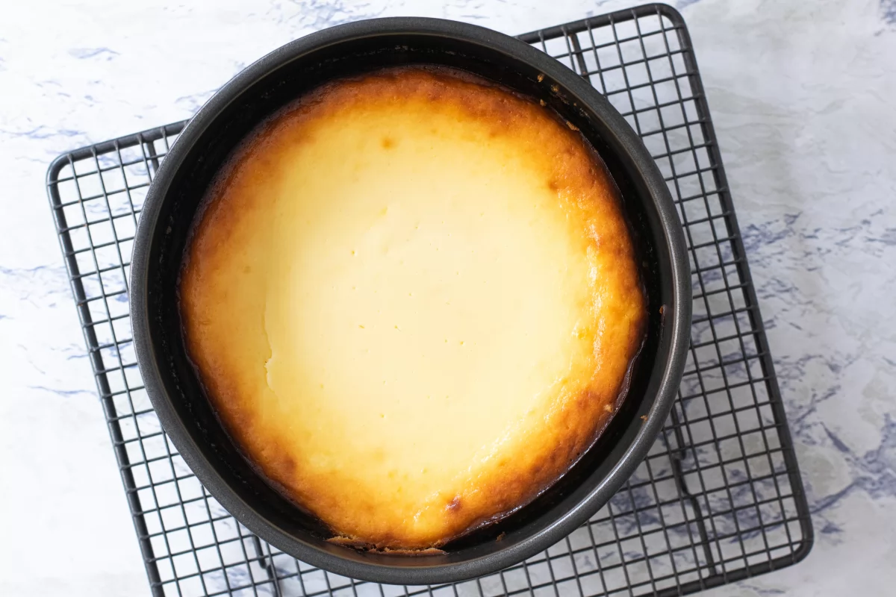Una vez fría, desmoldamos la tarta y la decoramos con la mermelada de fresa y los frutos rojos justo antes de servir.
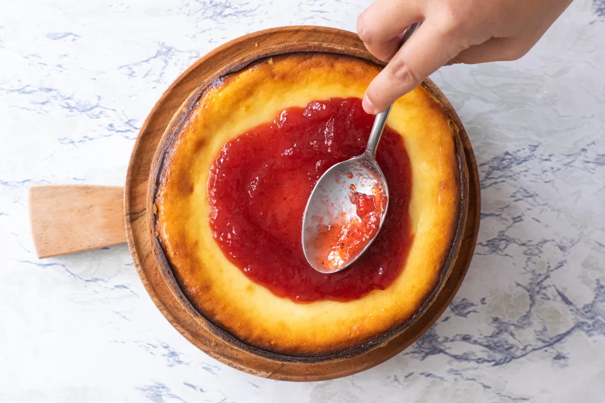